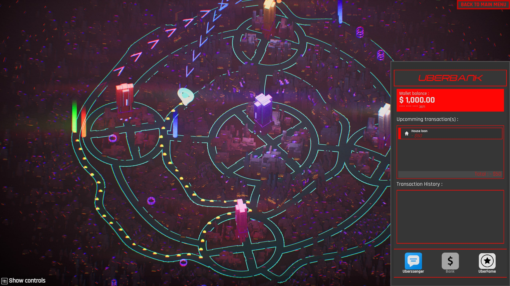
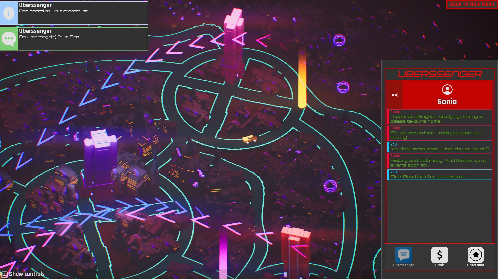
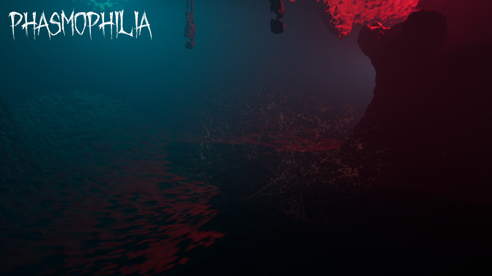
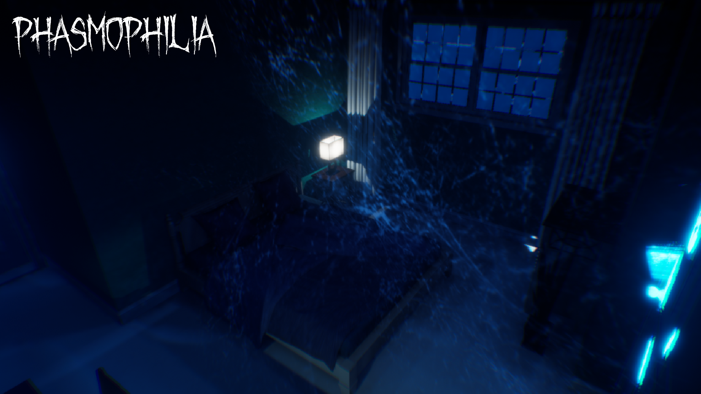
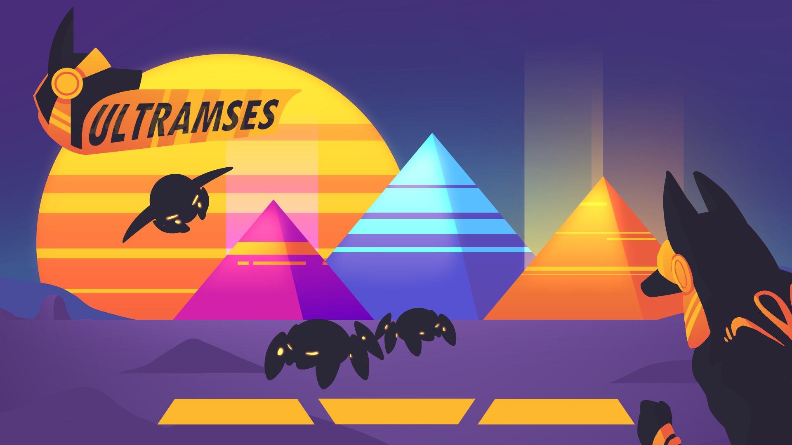

Many participations to Global Game Jam or GMTK Jam
Play as an Uber driver in year 2077 in a futuristic cyberpunk city, go through one week of time and try to escape the bad situation you start in !
Plan your trip by drawing it on your map, choose to adjust to the events or not, and repay your debt to start a new life in Synthity.
Fourth participation to GMTK with the theme "Loop" we designed a game about management and plannifcation of taxi trip. The player has to draw the line of his own path for the days, trying to get a bunch of people and drop-off them to the correct place and managing his own fuel.
At the end of the day : fuel, car repair, earning money from client and all other stuff are credited. The goal is to earn as much money as you can and not getting bankrupted.
I was in charge of all the player's objectives such as getting people into the car and droping them to the correct place or such as fuel consommation.
Play the game on Itch.io with this link .
 GMTK participation with the theme was "Build to Scale". We decided to make a group of 3 and to recreate a 3D version of Vampire Survivor game / Swarm mode from League of legends.
As a part of 3 programmers I handle all the tooling aspect, level generation (which is really infinite) and some of the guns abilities.
After game was realease we spoke a lot with the team to get feedback on process and pipeline and we were a bit too ambitious for the amount of time and the balance of the game.
The game is realease on Itch.io
Arcade party game design highly inspired by Rocket League. The game take place into the ocean where player controls duck stuck in giant plastic ball and try to score into goal the beach balloon.
I handle all the programming aspect of the game from physics to players controls and automatic camera controls.
The game can be play from 2 to 4 players by team on the same screen. Click on the image to get the game !
Second participation to the GMTK game jam which was themed on "Role swap". We make a alternative version of Phasmophobia where you play the ghost instead of ghost's hunters.
The aim was to redo all the different abilities and all the aspect of the game to make it realistic.
We had really good feedback coming from players who play a lot of Phasmophobia and we succeed into the level design and immersion.
You can play the game on Itch.io
 In the city of Neo-Egyptus, the mecha-bettle are spreading terror. Their Swarm-Network was hacked by the Mozes organization, so they turned against the city and its people. Armed with ancient weapons with phenomenal powers, evict as many creatures as possible before falling in battle, for the glory of Neo-Egyptus.
The game is a fast-paced FPS mostly inspired by Call of Duty Zombie mode where the player can shoot on target and locked them with lighting chain. With various abilities to move around ennemies, players are highly challenged on their position and their ennemies management.
As we where 15 in the project with all the former of my class we decided to split the team into various section which was leaded by one man. I was in charge of producing programming aspect and link with technical artist
Download and play the game here on Itch.io
